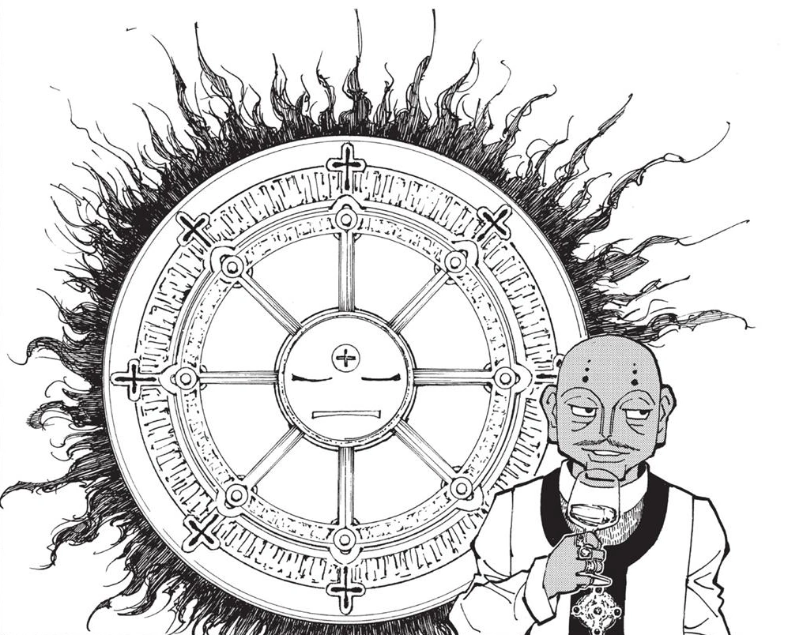
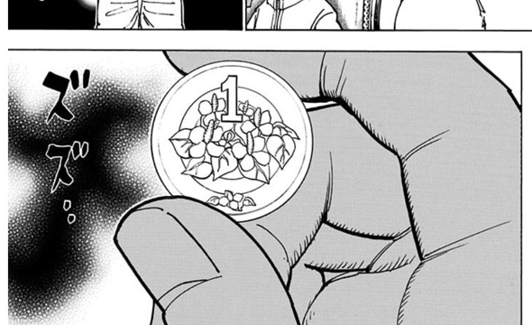

第3王子 チョウライ
- 登録名
- チョウライ＝ホイコーロ
- 分類
- 王子
- 初期配置（現在地ではありません）
- 第1層 1003号室
初期配置は台帳の当初の担当先です。後任の人物や復元枠も含み、全員の出航時の在室を示すものではありません。後の展開は下の折りたたみにまとめています。
人物詳細（後の展開を含む）
- 状態
- 存命
- 所属
- カキン王国
- 母（王妃）
- 第三王妃トウチョウレイ
- 最後の所在
所在候補（在室は未確認）：第2層 （軍の移動報告）（第410話時点）
ほかの関係記録（本人の在室は未確認）
- 第376話 第1層 1003号室
- 念使用の確認
- 念使用：未確認（使用不可とは限りません）
- 念系統
- 未確認
- 念能力
- 本人固有の能力は未確認
- 守護霊獣
- コイン吐き出し型念獣
家族関係
- [親子] 第3王妃 トウチョウレイ（母）
- [親子] オニオール＝ロンポウ（実父説・未確定）
守護霊獣：コイン吐き出し型念獣
- 外見・形態
- 太陽とタイヤが融合したような外見の念獣。口から1日1枚コインを落とす
- 守護霊獣の念系統
- 具現化系
- 念能力
- 1日1枚コインを産み出す。所持者が一定条件を満たすとさまざまな念能力が発現する具現化系・複合型
第376話（原作確認記録あり） ／ 第404話（原作確認記録あり）


編集状況
- 人物ID：P03
- 状態の確認話数：未登録／根拠の出来事：未照合
- 公開データの登録情報から生成したページです。個人メモ・編集内容・調査記録は含めません。
- 一覧の詳細でメモ・編集
情報源：公開人物台帳・公開出来事台帳。